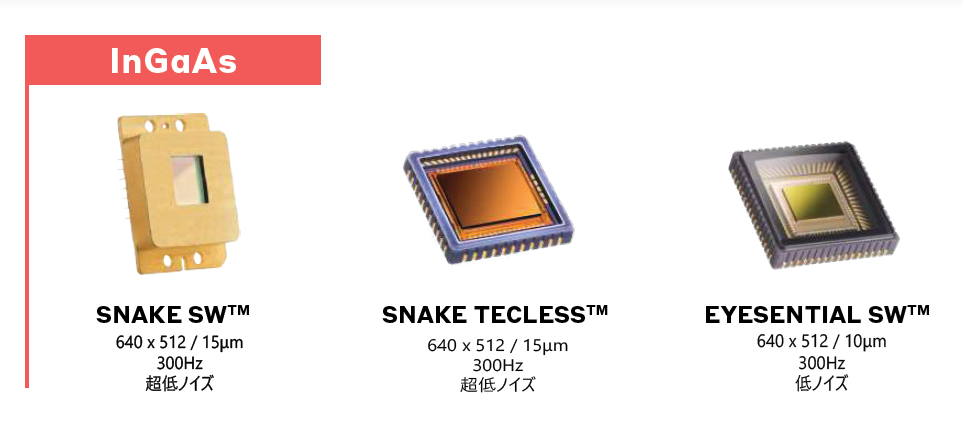
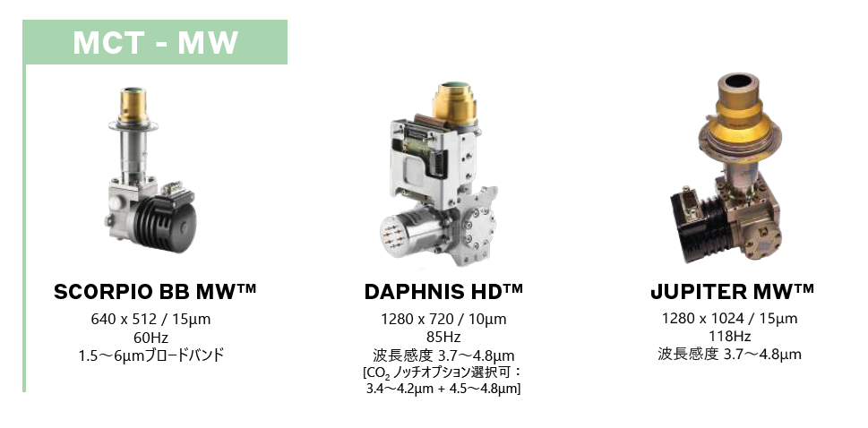
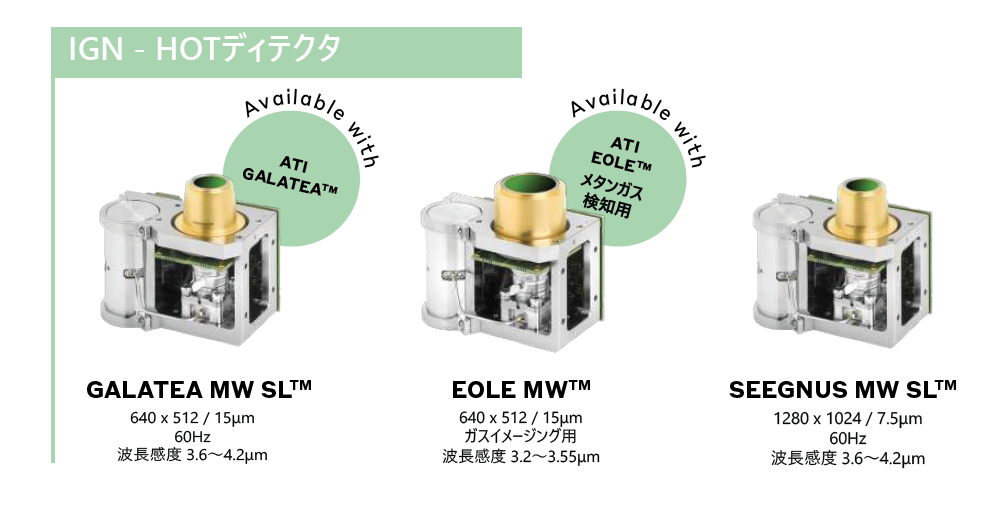
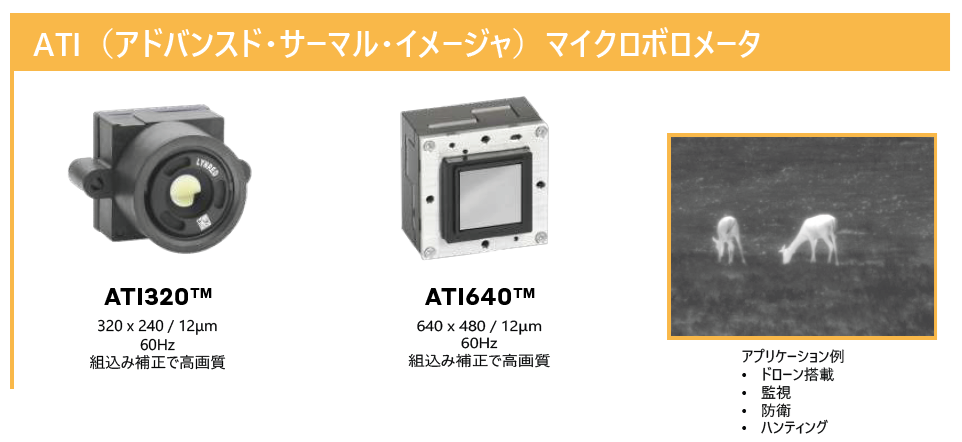

【エグゼクティブ・サマリー】
- 微細化技術（12µmピッチ）： 産業機器の小型化と高性能化を同時に実現。
- 高度な波長選択性： MW（中波）からVLW（超長波）まで、従来の「温度計測」を超えた「環境認識」へ。
- 軍事・宇宙基準の信頼性： 過酷な環境に耐える「HOT」技術やMCTセンサーが設計思想の転換を迫る。
赤外線センシング技術は、単なる「温度の可視化」というフェーズを終え、機械学習と融合した「自律判断のための入力デバイス」へと進化を遂げています。現在、市場を牽引しているのは、LYNREDに代表される冷却型（MCT/InGaAs）と非冷却型（マイクロボロメータ）の高度なポートフォリオです。
1. InGaAs（インジウムガリウム砒素）

SNAKE SW™ / EYESENTIAL SW™
近赤外線（SWIR）領域：超高感度・高速イメージング
- 「見えない」を暴く透過力： シリコンウェハーの裏面検査、果実の鮮度確認、塗料を透過した下地の確認に。
- 高速・低ノイズ： 300Hzという非常に高いフレームレートで、高速で流れる工場の検査ラインに最適。
- 夜間監視： 夜空の微弱な光（エアグロー）を捉え、完全な暗闇での監視を可能に。
2. MCT（水銀カドミウムテルル）
究極の感度を誇るハイエンド・冷却型センサー
- 圧倒的な温度分解能： わずかな温度差を精密に識別。宇宙観測、防衛、高度な学術研究に。
- 多種多様な波長帯： MW（中波）から、長距離監視・極低温環境に対応するVLW（超長波：7〜11.7µm）まで対応。
- 高解像度・広帯域： DAPHNIS HD™ 等によりメガピクセル級の鮮明な熱画像を提供。

DAPHNIS HD™ / JUPITER MW™
3. IGN - HOTディテクタ

GALATEA / EOLE MW™
長寿命と高性能を両立した「高動作温度（HOT）」技術
- 低負荷・長寿命： 通常の冷却型より高い温度で動作し、冷却機への負荷を軽減。消費電力を削減。
- ガスイメージング（EOLE MW™）： メタンガス（3.2〜3.55µm）の可視化に特化。ガス漏れを「煙」として可視化。
4. ATI（アドバンスド・サーマル・イメージャ）
SWaP最適化をリードする非冷却型インテリジェント・モジュール
- 12µmピッチの衝撃： メガピクセル級の解像度をコンパクトに。ドローンやロボットビジョンへの実装を加速。
- 即戦力の高画質： 自動画像補正機能を内蔵。複雑なキャリブレーションなしで高品質な画像を出力。
- 迅速なプロトタイピング： 監視カメラ、ハンティング用スコープなど、機動力が必要なシーンに。

ATI320™ / ATI640™
技術的な使い分けのヒント
- SPEED & PENETRATION スピードと透過が必要なら → InGaAs
- PRECISION 極限の精度と波長選択が必要なら → MCT / IGN
- COMPACT & EASY 小型化・コスト・使い勝手を重視するなら → ATI / マイクロボロメータ
【浮かび上がる「静かなる課題」と解決策】
センサーの性能向上に伴い、それを支える「光学系の限界」がボトルネックとなっています。軍事・宇宙基準の耐久性が求められる過酷な環境下において、民生品転用の光学系では長期的な信頼性を担保できません。
弊社では、LYNREDの高度な検出器と、Janos Technologyの精密光学系を組み合わせ、システム設計の段階で光学透過率、熱膨張係数、環境耐久性を最適化したシステムアーキテクチャをご提案します。